# 地下异常密度重力反演基本模型对比
# 数据生成
第一次探索先生成 2000 训练样本，其中训练比例为 8.5：1.5
这两个是地球物理重力正演中非常经典的 ** 矩形棱柱体重力异常（）及其导数（）** 的解析表达式。 作为通道 1， 作为通道 2 输入到网络之中
# 模型与参数
- UNet++、ReLU、ReduceLROnPlateau、b4、epochs150
- UNet++、ReLU、ReduceLROnPlateau、b16、epochs100、body_weight 100
- UNet++、LeakyReLU、CosineAnnealingWarmRestarts、b16、epochs100、body_weight 100
- UNet_ResNeXt50_32x4d、LeakyReLU、CosineAnnealingWarmRestarts、b16、epochs100、body_weight 100
- Att_Unet ，LeakyReLU，CosineAnnealingWarmRestarts、b16、epochs100、body_weight 100
- Att_Unet with GLoss ，LeakyReLU，CosineAnnealingWarmRestarts、b16、epochs100、body_weight 100、GLoss
# 训练过程
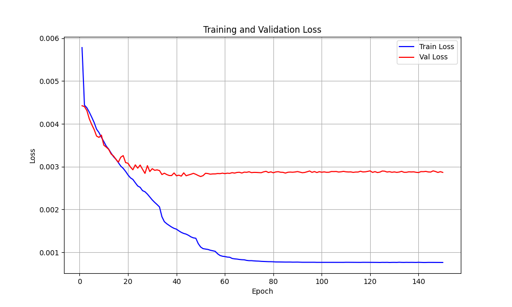
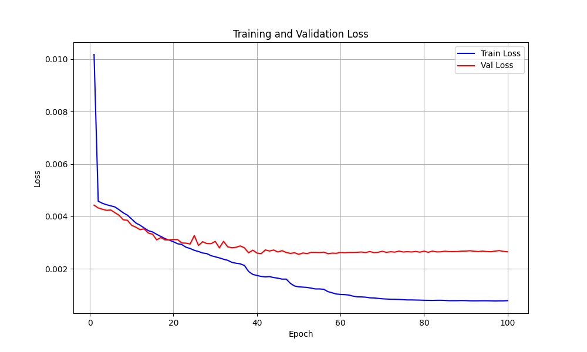
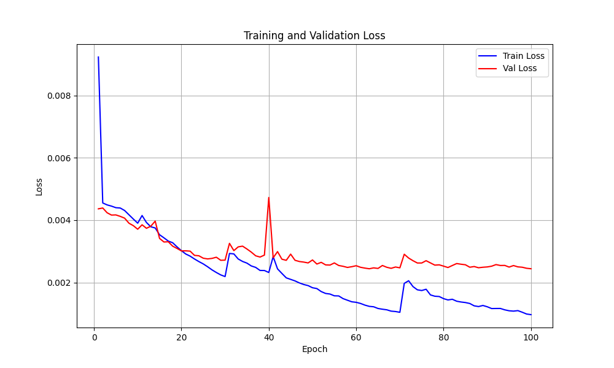
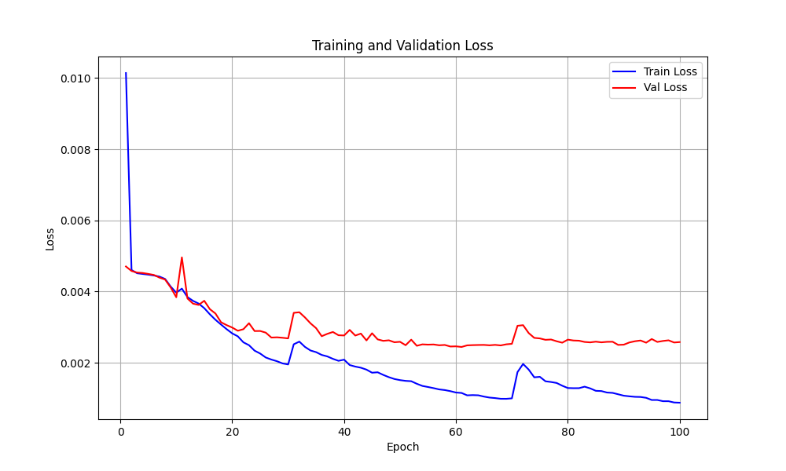
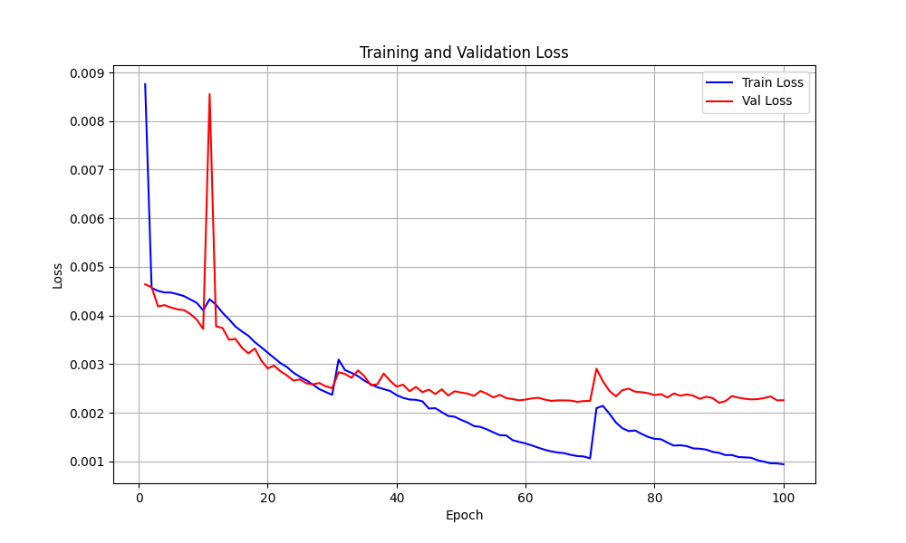
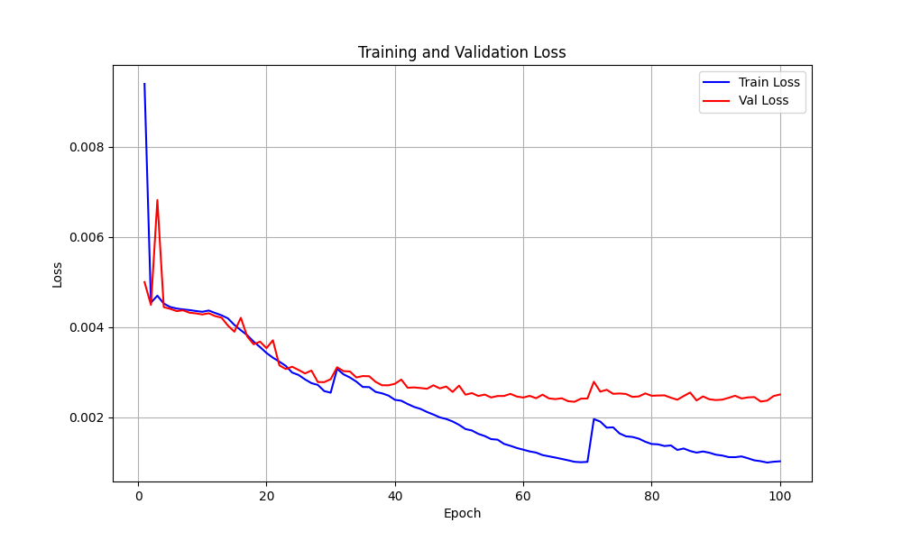
# 90 到 100 轮切片对比
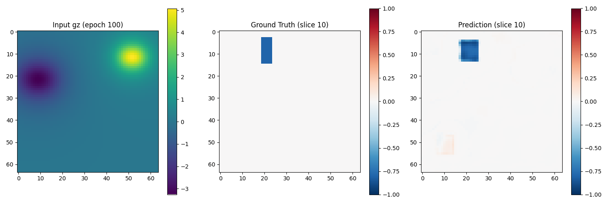
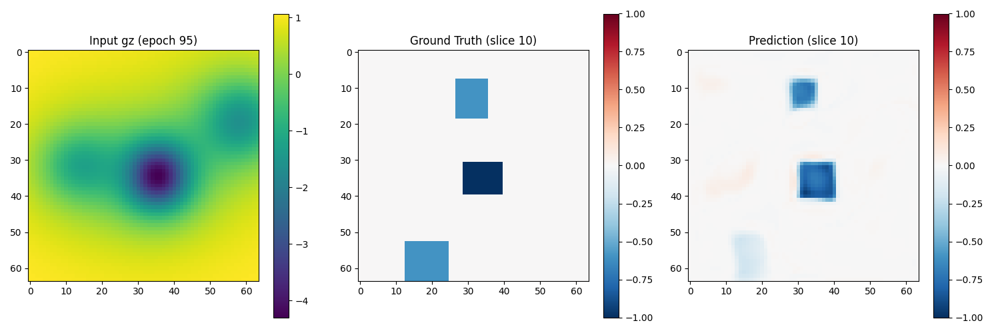
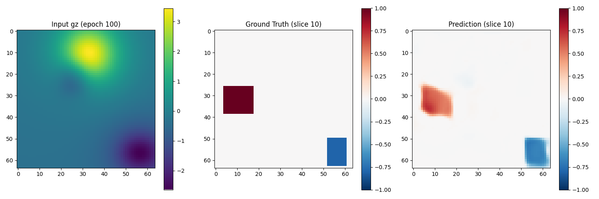
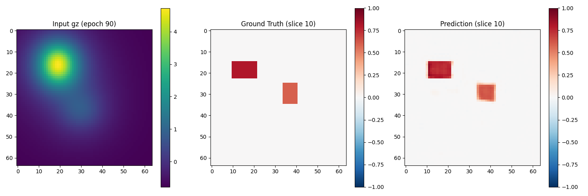
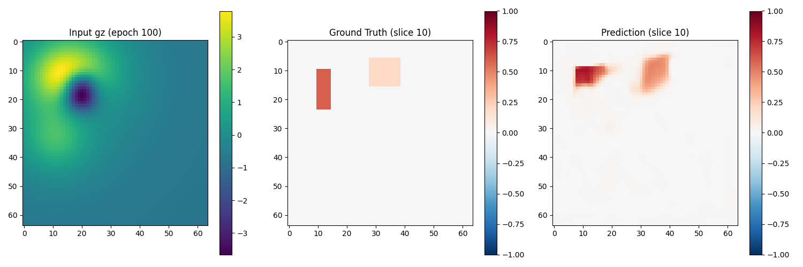
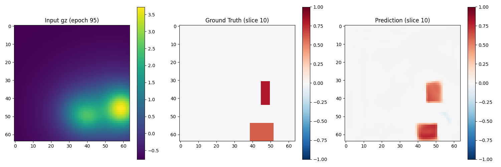
# 并不严谨的结论
当前，我还没有应用一些评价指标，以及控制对比变量，只是直观的探讨了一下模型。就这六次来讲，UNet_ResNeXt50_32x4d (4) 与 Att_Unet with GLoss (6) 相对来讲是最好的，后续将会把 ResNeXt50 主干融入到 UNetpp 与 Att_UNetpp 之中，以及近期的新的主干 ViT 与 ViM，将会提上日程。除此之外，选择或创造更适用于反演任务的模块也尤为重要。